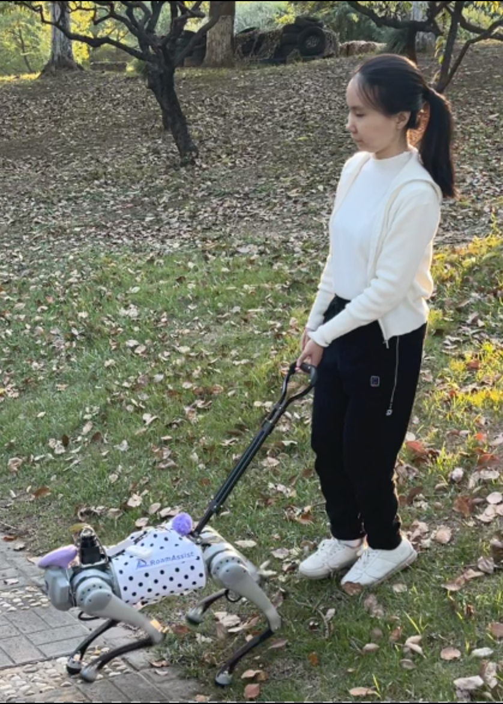
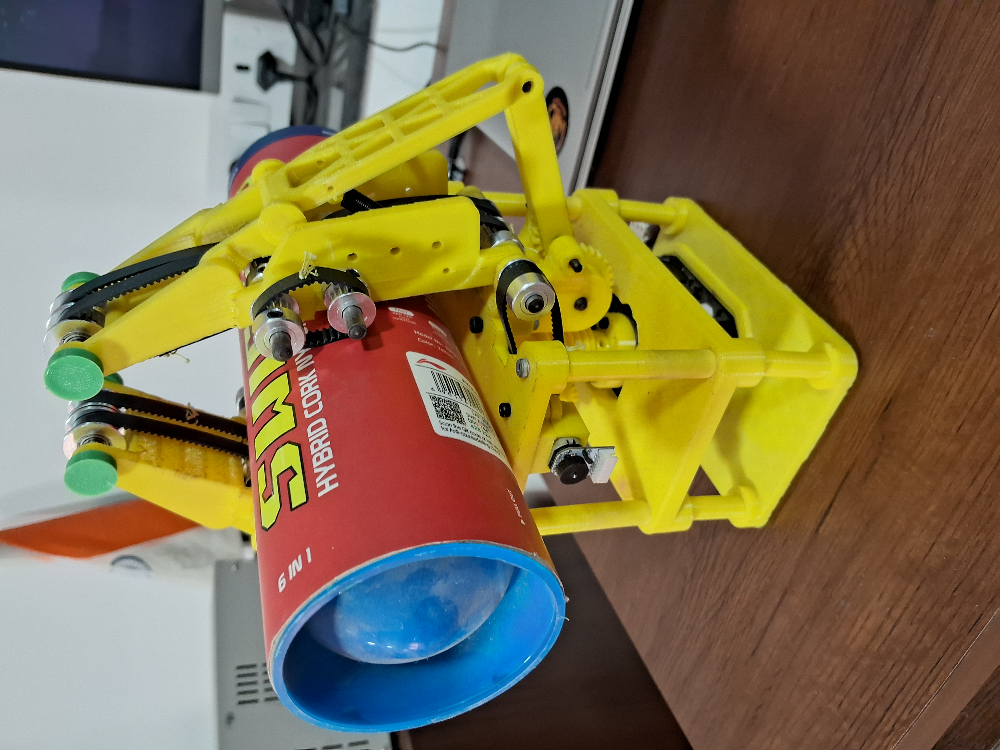

Publications
Check out some of my latest projects with creative ideas.
-

Control Systems, Robotics, and Mechanical design | 2024
Navigating real-world challenges: A quadruped robot guiding system for visually impaired people in diverse environments
• This work presents RDog, a quadruped robot designed to assist blind and visually impaired (BVI) individuals in navigating unfamiliar environments. RDog integrates advanced mapping, navigation, force feedback, and preemptive voice guidance to help users avoid obstacles in both indoor and outdoor settings. Experiments comparing the use of a white cane, a smart cane, and RDog showed that RDog improved navigation speed, smoothness, and reduced cognitive load for BVI users.
Shaojun Cai, Ashwin Ram, Zhengtai Gou, Mohd Alqama Wasim Shaikh*, Yu-An Chen, Yingjia Wan, Kotaro Hara, Shengdong Zhao, and David Hsu. Navigating real-world challenges: A quadruped robot guiding system for visually impaired people in diverse environments. In Proceedings of the CHI Conference on Human Factors in Computing Systems, CHI ’24, New York, NY, USA, 2024. Association for Computing Machinery
See Project -

Control Systems, Robotics, and Mechanical design | 2024
Acti-V-Link: An Active Surface Gripper for In-Hand Manipulation
• Design and Manufacturing: Developed a cost-effective and robust gripper using SolidWorks and 3D printing technology, ensuring structural integrity with PLA material and optimizing gear and linkage mechanisms for efficient in-hand manipulation. Control Systems Integration: Implemented and optimized control systems using ESP32 microcontroller and FreeRTOS for precise motor control, integrating visual feedback with Aruco markers for accurate pose estimation and manipulation of various objects. Experimental Validation: Conducted comprehensive experiments demonstrating the gripper’s ability to handle objects of different shapes and sizes with accurate rotational and translational movements, utilizing torque feedback for secure grasping and maintaining mechanical stress within safe limits
Karthik Swaminathan, Saad Hashmi, Alqama Shaikh, and Vikas Phalle. Next-gen manipulation: An active surface-based underactuated gripper with visual feedback. In 2nd Workshop on Dexterous Manipulation: Design, Perception and Control (RSS), 2024
See Project